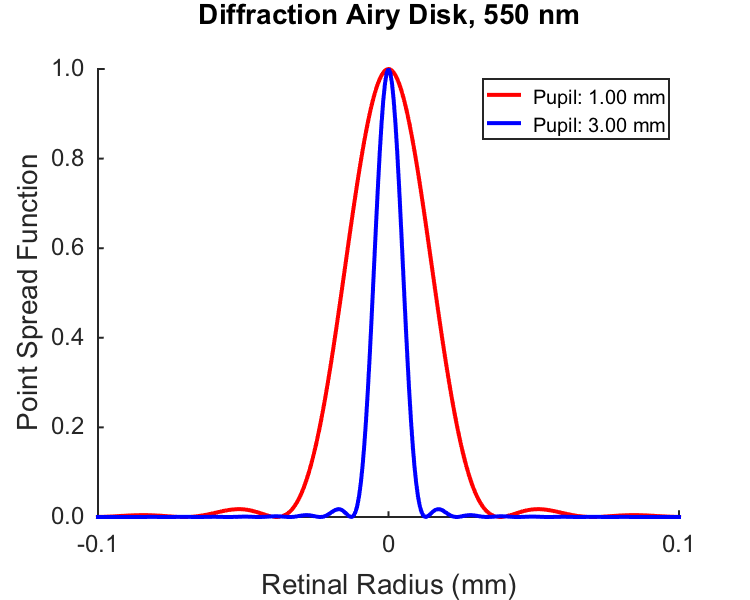
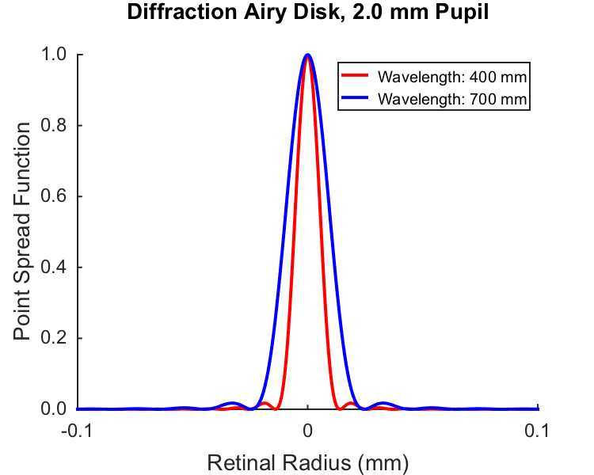

Contents
- Function implementing the isetbio validation code
- Hello
- Set parameters
- Set up spatial arguments to calculate on.
- Do the calculation for each pupil size at fixed wavelength.
- Plot slices of the diffraction limited psf
- Do the calculation for each wavelength at fixed pupil size
- Plot slices of the diffraction limited psf
- Save validation data
function varargout = cbOpticsImage_Diffraction(varargin) % % Compute and show slices through the diffraction Airy disk. % % (c) David Brainard and Andrew Stockman, 2015 varargout = UnitTest.runValidationRun(@ValidationFunction, nargout, varargin); end
Function implementing the isetbio validation code
function ValidationFunction(runTimeParams)
Hello
UnitTest.validationRecord('SIMPLE_MESSAGE', sprintf('%s',mfilename)); outputDir = sprintf('%s_Output',mfilename); if (~exist(outputDir,'dir')) mkdir(outputDir); end
Set parameters
calcParams.eyeDiameterMm = 24; calcParams.theWavelengthNm = 550; calcParams.thePupilDiameterMm = 2; calcParams.varyPupilDiametersMm = [1 3]; calcParams.varyWavelengthsNm = [400 700]; nPupilDiameters = length(calcParams.varyPupilDiametersMm);
Set up spatial arguments to calculate on.
Start by specifying the range in retinal mm and then converting to degrees. A little roundabout for present purposes, but whatever.
retinalRadiiMm = 0.5; retinalRadiiDeg = RetinalMMToDegrees(retinalRadiiMm,calcParams.eyeDiameterMm); retinalRadiiRad = degtorad(retinalRadiiDeg); % Set up grid matrices, so that we can convert radius to two-dimensional % image. Although it is probably inefficient to compute on all the radii of % a square image matrix (as opposed to computing for linear radii and then % propogating the andswer onto an image), computers are fast enough that we % don't care. nPixels = 2001; centerPixel = round(nPixels+1)/2; radiusMatrixRaw = MakeRadiusMat(nPixels,nPixels,centerPixel,centerPixel)/nPixels; radiusMatrixDegs = retinalRadiiDeg*radiusMatrixRaw; radiusLineDegs = [-radiusMatrixDegs(centerPixel,1:centerPixel-1) radiusMatrixDegs(centerPixel,centerPixel:end)]; radiusMatrixRad = retinalRadiiRad*radiusMatrixRaw;
Do the calculation for each pupil size at fixed wavelength.
The Psychtoolbox routine AiryPattern does the work. Normalize volume of PSF to unity, for fun. Also extract 1d slice.
for p = 1:length(calcParams.varyPupilDiametersMm) pupilDiameterMm = calcParams.varyPupilDiametersMm(p); wavelengthNm = calcParams.theWavelengthNm; diffractionPSFVaryPupilImage{p} = AiryPattern(radiusMatrixRad,pupilDiameterMm,wavelengthNm); diffractionPSFVaryPupilImage{p} = diffractionPSFVaryPupilImage{p}/sum(diffractionPSFVaryPupilImage{p}(:)); diffractionPSFVaryPupilSlice{p} = diffractionPSFVaryPupilImage{p}(centerPixel,:); end
Plot slices of the diffraction limited psf
The plot shows a slice through the center of the psf for each pupil size.
The plot works better to compare shapes if we normalize PSFs to max of 1 rather than to unit volume, but be aware that the height of the volume normalized PSF will be different as a function of pupil size.
if (runTimeParams.generatePlots) [diffractionSliceFig,diffractionSliceFigParams] = cbFigInit; diffractionSliceFigParams.xLimLow = -0.1; diffractionSliceFigParams.xLimHigh = 0.1; diffractionSliceFigParams.xTicks = [-0.1 0 0.1]; diffractionSliceFigParams.xTickLabels = {'^{ }-0.1_{ }' '^{ }0_{ }' '^{ }0.1_{ }'}; diffractionSliceFigParams.yLimLow = 0; diffractionSliceFigParams.yLimHigh = 1; diffractionSliceFigParams.yTicks = [0.0 0.2 0.4 0.6 0.8 1]; diffractionSliceFigParams.yTickLabels = {' 0.0 ' ' 0.2 ' ' 0.4 ' ' 0.6 ' ' 0.8 ' ' 1.0 '}; plot(radiusLineDegs,diffractionPSFVaryPupilSlice{1}/max(diffractionPSFVaryPupilSlice{1}),'r','LineWidth',diffractionSliceFigParams.lineWidth); plot(radiusLineDegs,diffractionPSFVaryPupilSlice{2}/max(diffractionPSFVaryPupilSlice{2}),'b','LineWidth',diffractionSliceFigParams.lineWidth); xlabel('Retinal Radius (mm)','FontSize',diffractionSliceFigParams.labelFontSize); ylabel('Point Spread Function','FontSize',diffractionSliceFigParams.labelFontSize); title({sprintf('Diffraction Airy Disk, %d nm',calcParams.theWavelengthNm) ; ' '},'FontSize',diffractionSliceFigParams.titleFontSize); cbFigAxisSet(diffractionSliceFig,diffractionSliceFigParams); legend({sprintf('^{ } Pupil: %0.2f mm ',calcParams.varyPupilDiametersMm(1)) ... sprintf('^{ } Pupil: %0.2f mm ',calcParams.varyPupilDiametersMm(2)) ... },'Location','NorthEast','FontSize',diffractionSliceFigParams.legendFontSize); FigureSave(fullfile(outputDir,[mfilename '_VaryPupil']),diffractionSliceFig,diffractionSliceFigParams.figType); end
Do the calculation for each wavelength at fixed pupil size
for w = 1:length(calcParams.varyWavelengthsNm) pupilDiameterMm = calcParams.thePupilDiameterMm; wavelengthNm = calcParams.varyWavelengthsNm(w); diffractionPSFVaryWavelengthImage{w} = AiryPattern(radiusMatrixRad,pupilDiameterMm,wavelengthNm); diffractionPSFVaryWavelengthImage{w} = diffractionPSFVaryWavelengthImage{w}/sum(diffractionPSFVaryWavelengthImage{w}(:)); diffractionPSFVaryWavelengthSlice{w} = diffractionPSFVaryWavelengthImage{w}(centerPixel,:); end
Plot slices of the diffraction limited psf
The plot shows a slice through the center of the psf for each pupil size.
The plot works better to compare shapes if we normalize PSFs to max of 1 rather than to unit volume, but be aware that the height of the volume normalized PSF will be different as a function of pupil size.
if (runTimeParams.generatePlots) [diffractionSliceFig,diffractionSliceFigParams] = cbFigInit; diffractionSliceFigParams.xLimLow = -0.1; diffractionSliceFigParams.xLimHigh = 0.1; diffractionSliceFigParams.xTicks = [-0.1 0 0.1]; diffractionSliceFigParams.xTickLabels = {'^{ }-0.1_{ }' '^{ }0_{ }' '^{ }0.1_{ }'}; diffractionSliceFigParams.yLimLow = 0; diffractionSliceFigParams.yLimHigh = 1; diffractionSliceFigParams.yTicks = [0.0 0.2 0.4 0.6 0.8 1]; diffractionSliceFigParams.yTickLabels = {' 0.0 ' ' 0.2 ' ' 0.4 ' ' 0.6 ' ' 0.8 ' ' 1.0 '}; plot(radiusLineDegs,diffractionPSFVaryWavelengthSlice{1}/max(diffractionPSFVaryWavelengthSlice{1}),'r','LineWidth',diffractionSliceFigParams.lineWidth); plot(radiusLineDegs,diffractionPSFVaryWavelengthSlice{2}/max(diffractionPSFVaryWavelengthSlice{2}),'b','LineWidth',diffractionSliceFigParams.lineWidth); xlabel('Retinal Radius (mm)','FontSize',diffractionSliceFigParams.labelFontSize); ylabel('Point Spread Function','FontSize',diffractionSliceFigParams.labelFontSize); title({sprintf('Diffraction Airy Disk, %0.1f mm Pupil',calcParams.thePupilDiameterMm) ; ' '},'FontSize',diffractionSliceFigParams.titleFontSize); cbFigAxisSet(diffractionSliceFig,diffractionSliceFigParams); legend({sprintf('^{ } Wavelength: %0d mm ',calcParams.varyWavelengthsNm(1)) ... sprintf('^{ } Wavelength: %0d mm ',calcParams.varyWavelengthsNm(2)) ... },'Location','NorthEast','FontSize',diffractionSliceFigParams.legendFontSize); FigureSave(fullfile(outputDir,[mfilename '_VaryWavelength']),diffractionSliceFig,diffractionSliceFigParams.figType); end
Save validation data
UnitTest.validationData('calcParams', calcParams); UnitTest.validationData('diffractionVaryPupilPSFSlice', diffractionPSFVaryWavelengthSlice); UnitTest.validationData('diffractionVaryWavelengthPSFSlice', diffractionPSFVaryWavelengthSlice);
end